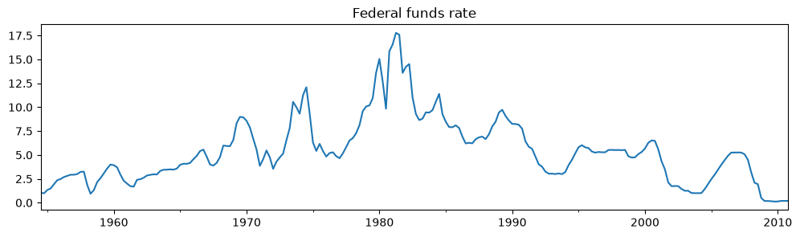
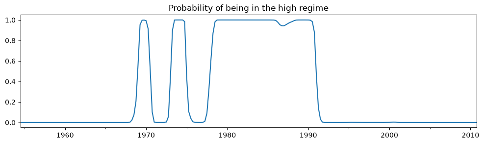
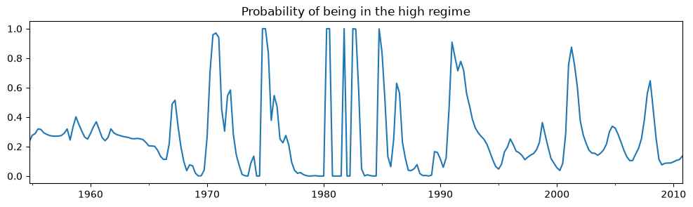
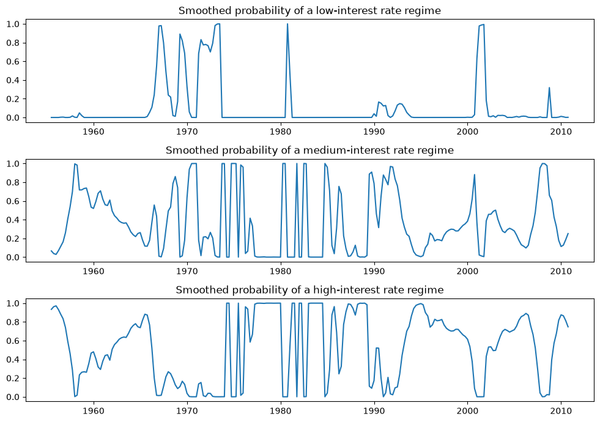
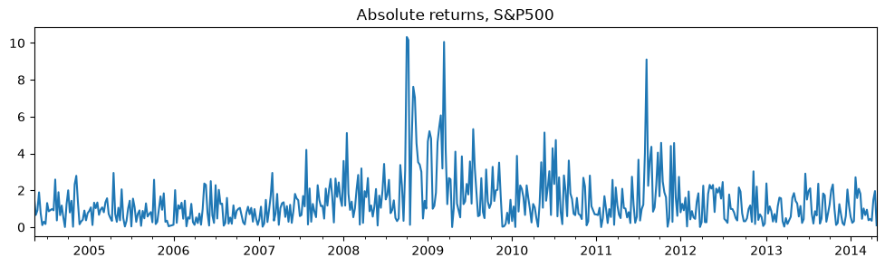
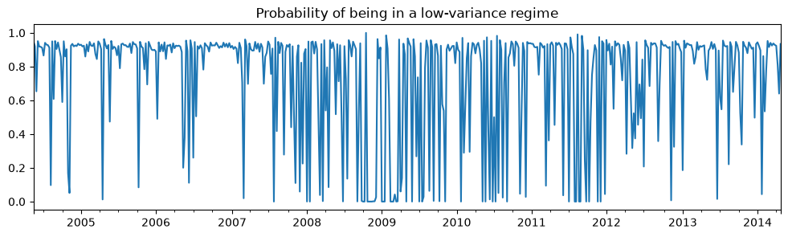

Markov switching dynamic regression models#
This notebook provides an example of the use of Markov switching models in statsmodels to estimate dynamic regression models with changes in regime. It follows the examples in the Stata Markov switching documentation, which can be found at http://www.stata.com/manuals14/tsmswitch.pdf.
[1]:
%matplotlib inline
from datetime import datetime
import matplotlib.pyplot as plt
import numpy as np
import pandas as pd
import statsmodels.api as sm
# NBER recessions
from pandas_datareader.data import DataReader
usrec = DataReader(
"USREC", "fred", start=datetime(1947, 1, 1), end=datetime(2013, 4, 1)
)
Federal funds rate with switching intercept#
The first example models the federal funds rate as noise around a constant intercept, but where the intercept changes during different regimes. The model is simply:
where \(S_t \in \{0, 1\}\), and the regime transitions according to
We will estimate the parameters of this model by maximum likelihood: \(p_{00}, p_{10}, \mu_0, \mu_1, \sigma^2\).
The data used in this example can be found at https://www.stata-press.com/data/r14/usmacro.
[2]:
# Get the federal funds rate data
from statsmodels.tsa.regime_switching.tests.test_markov_regression import fedfunds
dta_fedfunds = pd.Series(
fedfunds, index=pd.date_range("1954-07-01", "2010-10-01", freq="QS")
)
# Plot the data
dta_fedfunds.plot(title="Federal funds rate", figsize=(12, 3))
# Fit the model
# (a switching mean is the default of the MarkovRegession model)
mod_fedfunds = sm.tsa.MarkovRegression(dta_fedfunds, k_regimes=2)
res_fedfunds = mod_fedfunds.fit()

[3]:
res_fedfunds.summary()
[3]:
| Dep. Variable: | y | No. Observations: | 226 |
|---|---|---|---|
| Model: | MarkovRegression | Log Likelihood | -508.636 |
| Date: | Wed, 01 Jul 2026 | AIC | 1027.272 |
| Time: | 22:07:06 | BIC | 1044.375 |
| Sample: | 07-01-1954 | HQIC | 1034.174 |
| - 10-01-2010 | |||
| Covariance Type: | approx |
| coef | std err | z | P>|z| | [0.025 | 0.975] | |
|---|---|---|---|---|---|---|
| const | 3.7088 | 0.177 | 20.988 | 0.000 | 3.362 | 4.055 |
| coef | std err | z | P>|z| | [0.025 | 0.975] | |
|---|---|---|---|---|---|---|
| const | 9.5568 | 0.300 | 31.857 | 0.000 | 8.969 | 10.145 |
| coef | std err | z | P>|z| | [0.025 | 0.975] | |
|---|---|---|---|---|---|---|
| sigma2 | 4.4418 | 0.425 | 10.447 | 0.000 | 3.608 | 5.275 |
| coef | std err | z | P>|z| | [0.025 | 0.975] | |
|---|---|---|---|---|---|---|
| p[0->0] | 0.9821 | 0.010 | 94.443 | 0.000 | 0.962 | 1.002 |
| p[1->0] | 0.0504 | 0.027 | 1.876 | 0.061 | -0.002 | 0.103 |
Warnings:
[1] Covariance matrix calculated using numerical (complex-step) differentiation.
From the summary output, the mean federal funds rate in the first regime (the “low regime”) is estimated to be \(3.7\) whereas in the “high regime” it is \(9.6\). Below we plot the smoothed probabilities of being in the high regime. The model suggests that the 1980’s was a time-period in which a high federal funds rate existed.
[4]:
res_fedfunds.smoothed_marginal_probabilities[1].plot(
title="Probability of being in the high regime", figsize=(12, 3)
)
[4]:
<Axes: title={'center': 'Probability of being in the high regime'}>

From the estimated transition matrix we can calculate the expected duration of a low regime versus a high regime.
[5]:
print(res_fedfunds.expected_durations)
[55.85400626 19.85506546]
A low regime is expected to persist for about fourteen years, whereas the high regime is expected to persist for only about five years.
Federal funds rate with switching intercept and lagged dependent variable#
The second example augments the previous model to include the lagged value of the federal funds rate.
where \(S_t \in \{0, 1\}\), and the regime transitions according to
We will estimate the parameters of this model by maximum likelihood: \(p_{00}, p_{10}, \mu_0, \mu_1, \beta_0, \beta_1, \sigma^2\).
[6]:
# Fit the model
mod_fedfunds2 = sm.tsa.MarkovRegression(
dta_fedfunds.iloc[1:], k_regimes=2, exog=dta_fedfunds.iloc[:-1]
)
res_fedfunds2 = mod_fedfunds2.fit()
[7]:
res_fedfunds2.summary()
[7]:
| Dep. Variable: | y | No. Observations: | 225 |
|---|---|---|---|
| Model: | MarkovRegression | Log Likelihood | -264.711 |
| Date: | Wed, 01 Jul 2026 | AIC | 543.421 |
| Time: | 22:07:07 | BIC | 567.334 |
| Sample: | 10-01-1954 | HQIC | 553.073 |
| - 10-01-2010 | |||
| Covariance Type: | approx |
| coef | std err | z | P>|z| | [0.025 | 0.975] | |
|---|---|---|---|---|---|---|
| const | 0.7245 | 0.289 | 2.510 | 0.012 | 0.159 | 1.290 |
| x1 | 0.7631 | 0.034 | 22.629 | 0.000 | 0.697 | 0.829 |
| coef | std err | z | P>|z| | [0.025 | 0.975] | |
|---|---|---|---|---|---|---|
| const | -0.0989 | 0.118 | -0.835 | 0.404 | -0.331 | 0.133 |
| x1 | 1.0612 | 0.019 | 57.351 | 0.000 | 1.025 | 1.097 |
| coef | std err | z | P>|z| | [0.025 | 0.975] | |
|---|---|---|---|---|---|---|
| sigma2 | 0.4783 | 0.050 | 9.642 | 0.000 | 0.381 | 0.576 |
| coef | std err | z | P>|z| | [0.025 | 0.975] | |
|---|---|---|---|---|---|---|
| p[0->0] | 0.6378 | 0.120 | 5.304 | 0.000 | 0.402 | 0.874 |
| p[1->0] | 0.1306 | 0.050 | 2.634 | 0.008 | 0.033 | 0.228 |
Warnings:
[1] Covariance matrix calculated using numerical (complex-step) differentiation.
There are several things to notice from the summary output:
The information criteria have decreased substantially, indicating that this model has a better fit than the previous model.
The interpretation of the regimes, in terms of the intercept, have switched. Now the first regime has the higher intercept and the second regime has a lower intercept.
Examining the smoothed probabilities of the high regime state, we now see quite a bit more variability.
[8]:
res_fedfunds2.smoothed_marginal_probabilities[0].plot(
title="Probability of being in the high regime", figsize=(12, 3)
)
[8]:
<Axes: title={'center': 'Probability of being in the high regime'}>

Finally, the expected durations of each regime have decreased quite a bit.
[9]:
print(res_fedfunds2.expected_durations)
[2.76105188 7.65529154]
Taylor rule with 2 or 3 regimes#
We now include two additional exogenous variables - a measure of the output gap and a measure of inflation - to estimate a switching Taylor-type rule with both 2 and 3 regimes to see which fits the data better.
Because the models can be often difficult to estimate, for the 3-regime model we employ a search over starting parameters to improve results, specifying 20 random search repetitions.
[10]:
# Get the additional data
from statsmodels.tsa.regime_switching.tests.test_markov_regression import inf, ogap
dta_ogap = pd.Series(ogap, index=pd.date_range("1954-07-01", "2010-10-01", freq="QS"))
dta_inf = pd.Series(inf, index=pd.date_range("1954-07-01", "2010-10-01", freq="QS"))
exog = pd.concat((dta_fedfunds.shift(), dta_ogap, dta_inf), axis=1).iloc[4:]
# Fit the 2-regime model
mod_fedfunds3 = sm.tsa.MarkovRegression(dta_fedfunds.iloc[4:], k_regimes=2, exog=exog)
res_fedfunds3 = mod_fedfunds3.fit()
# Fit the 3-regime model
np.random.seed(12345)
mod_fedfunds4 = sm.tsa.MarkovRegression(dta_fedfunds.iloc[4:], k_regimes=3, exog=exog)
res_fedfunds4 = mod_fedfunds4.fit(search_reps=20)
[11]:
res_fedfunds3.summary()
[11]:
| Dep. Variable: | y | No. Observations: | 222 |
|---|---|---|---|
| Model: | MarkovRegression | Log Likelihood | -229.256 |
| Date: | Wed, 01 Jul 2026 | AIC | 480.512 |
| Time: | 22:07:16 | BIC | 517.942 |
| Sample: | 07-01-1955 | HQIC | 495.624 |
| - 10-01-2010 | |||
| Covariance Type: | approx |
| coef | std err | z | P>|z| | [0.025 | 0.975] | |
|---|---|---|---|---|---|---|
| const | 0.6555 | 0.137 | 4.771 | 0.000 | 0.386 | 0.925 |
| x1 | 0.8314 | 0.033 | 24.951 | 0.000 | 0.766 | 0.897 |
| x2 | 0.1355 | 0.029 | 4.609 | 0.000 | 0.078 | 0.193 |
| x3 | -0.0274 | 0.041 | -0.671 | 0.502 | -0.107 | 0.053 |
| coef | std err | z | P>|z| | [0.025 | 0.975] | |
|---|---|---|---|---|---|---|
| const | -0.0945 | 0.128 | -0.739 | 0.460 | -0.345 | 0.156 |
| x1 | 0.9293 | 0.027 | 34.309 | 0.000 | 0.876 | 0.982 |
| x2 | 0.0343 | 0.024 | 1.429 | 0.153 | -0.013 | 0.081 |
| x3 | 0.2125 | 0.030 | 7.147 | 0.000 | 0.154 | 0.271 |
| coef | std err | z | P>|z| | [0.025 | 0.975] | |
|---|---|---|---|---|---|---|
| sigma2 | 0.3323 | 0.035 | 9.526 | 0.000 | 0.264 | 0.401 |
| coef | std err | z | P>|z| | [0.025 | 0.975] | |
|---|---|---|---|---|---|---|
| p[0->0] | 0.7279 | 0.093 | 7.828 | 0.000 | 0.546 | 0.910 |
| p[1->0] | 0.2115 | 0.064 | 3.298 | 0.001 | 0.086 | 0.337 |
Warnings:
[1] Covariance matrix calculated using numerical (complex-step) differentiation.
[12]:
res_fedfunds4.summary()
[12]:
| Dep. Variable: | y | No. Observations: | 222 |
|---|---|---|---|
| Model: | MarkovRegression | Log Likelihood | -180.806 |
| Date: | Wed, 01 Jul 2026 | AIC | 399.611 |
| Time: | 22:07:16 | BIC | 464.262 |
| Sample: | 07-01-1955 | HQIC | 425.713 |
| - 10-01-2010 | |||
| Covariance Type: | approx |
| coef | std err | z | P>|z| | [0.025 | 0.975] | |
|---|---|---|---|---|---|---|
| const | -1.0250 | 0.290 | -3.531 | 0.000 | -1.594 | -0.456 |
| x1 | 0.3277 | 0.086 | 3.812 | 0.000 | 0.159 | 0.496 |
| x2 | 0.2036 | 0.049 | 4.152 | 0.000 | 0.107 | 0.300 |
| x3 | 1.1381 | 0.081 | 13.977 | 0.000 | 0.978 | 1.298 |
| coef | std err | z | P>|z| | [0.025 | 0.975] | |
|---|---|---|---|---|---|---|
| const | -0.0259 | 0.087 | -0.298 | 0.765 | -0.196 | 0.144 |
| x1 | 0.9737 | 0.019 | 50.265 | 0.000 | 0.936 | 1.012 |
| x2 | 0.0341 | 0.017 | 2.030 | 0.042 | 0.001 | 0.067 |
| x3 | 0.1215 | 0.022 | 5.606 | 0.000 | 0.079 | 0.164 |
| coef | std err | z | P>|z| | [0.025 | 0.975] | |
|---|---|---|---|---|---|---|
| const | 0.7346 | 0.130 | 5.632 | 0.000 | 0.479 | 0.990 |
| x1 | 0.8436 | 0.024 | 35.198 | 0.000 | 0.797 | 0.891 |
| x2 | 0.1633 | 0.025 | 6.515 | 0.000 | 0.114 | 0.212 |
| x3 | -0.0499 | 0.027 | -1.835 | 0.067 | -0.103 | 0.003 |
| coef | std err | z | P>|z| | [0.025 | 0.975] | |
|---|---|---|---|---|---|---|
| sigma2 | 0.1660 | 0.018 | 9.240 | 0.000 | 0.131 | 0.201 |
| coef | std err | z | P>|z| | [0.025 | 0.975] | |
|---|---|---|---|---|---|---|
| p[0->0] | 0.7214 | 0.117 | 6.177 | 0.000 | 0.493 | 0.950 |
| p[1->0] | 4.001e-08 | nan | nan | nan | nan | nan |
| p[2->0] | 0.0783 | 0.038 | 2.079 | 0.038 | 0.004 | 0.152 |
| p[0->1] | 0.1044 | 0.095 | 1.103 | 0.270 | -0.081 | 0.290 |
| p[1->1] | 0.8259 | 0.054 | 15.208 | 0.000 | 0.719 | 0.932 |
| p[2->1] | 0.2288 | 0.073 | 3.150 | 0.002 | 0.086 | 0.371 |
Warnings:
[1] Covariance matrix calculated using numerical (complex-step) differentiation.
Due to lower information criteria, we might prefer the 3-state model, with an interpretation of low-, medium-, and high-interest rate regimes. The smoothed probabilities of each regime are plotted below.
[13]:
fig, axes = plt.subplots(3, figsize=(10, 7))
ax = axes[0]
ax.plot(res_fedfunds4.smoothed_marginal_probabilities[0])
ax.set(title="Smoothed probability of a low-interest rate regime")
ax = axes[1]
ax.plot(res_fedfunds4.smoothed_marginal_probabilities[1])
ax.set(title="Smoothed probability of a medium-interest rate regime")
ax = axes[2]
ax.plot(res_fedfunds4.smoothed_marginal_probabilities[2])
ax.set(title="Smoothed probability of a high-interest rate regime")
fig.tight_layout()

Switching variances#
We can also accommodate switching variances. In particular, we consider the model
We use maximum likelihood to estimate the parameters of this model: \(p_{00}, p_{10}, \mu_0, \mu_1, \beta_0, \beta_1, \sigma_0^2, \sigma_1^2\).
The application is to absolute returns on stocks, where the data can be found at https://www.stata-press.com/data/r14/snp500.
[14]:
# Get the federal funds rate data
from statsmodels.tsa.regime_switching.tests.test_markov_regression import areturns
dta_areturns = pd.Series(
areturns, index=pd.date_range("2004-05-04", "2014-5-03", freq="W")
)
# Plot the data
dta_areturns.plot(title="Absolute returns, S&P500", figsize=(12, 3))
# Fit the model
mod_areturns = sm.tsa.MarkovRegression(
dta_areturns.iloc[1:],
k_regimes=2,
exog=dta_areturns.iloc[:-1],
switching_variance=True,
)
res_areturns = mod_areturns.fit()

[15]:
res_areturns.summary()
[15]:
| Dep. Variable: | y | No. Observations: | 520 |
|---|---|---|---|
| Model: | MarkovRegression | Log Likelihood | -745.798 |
| Date: | Wed, 01 Jul 2026 | AIC | 1507.595 |
| Time: | 22:07:19 | BIC | 1541.626 |
| Sample: | 05-16-2004 | HQIC | 1520.926 |
| - 04-27-2014 | |||
| Covariance Type: | approx |
| coef | std err | z | P>|z| | [0.025 | 0.975] | |
|---|---|---|---|---|---|---|
| const | 0.7641 | 0.078 | 9.761 | 0.000 | 0.611 | 0.918 |
| x1 | 0.0791 | 0.030 | 2.620 | 0.009 | 0.020 | 0.138 |
| sigma2 | 0.3476 | 0.061 | 5.694 | 0.000 | 0.228 | 0.467 |
| coef | std err | z | P>|z| | [0.025 | 0.975] | |
|---|---|---|---|---|---|---|
| const | 1.9728 | 0.278 | 7.086 | 0.000 | 1.427 | 2.518 |
| x1 | 0.5280 | 0.086 | 6.155 | 0.000 | 0.360 | 0.696 |
| sigma2 | 2.5771 | 0.405 | 6.357 | 0.000 | 1.783 | 3.372 |
| coef | std err | z | P>|z| | [0.025 | 0.975] | |
|---|---|---|---|---|---|---|
| p[0->0] | 0.7531 | 0.063 | 11.871 | 0.000 | 0.629 | 0.877 |
| p[1->0] | 0.6825 | 0.066 | 10.301 | 0.000 | 0.553 | 0.812 |
Warnings:
[1] Covariance matrix calculated using numerical (complex-step) differentiation.
The first regime is a low-variance regime and the second regime is a high-variance regime. Below we plot the probabilities of being in the low-variance regime. Between 2008 and 2012 there does not appear to be a clear indication of one regime guiding the economy.
[16]:
res_areturns.smoothed_marginal_probabilities[0].plot(
title="Probability of being in a low-variance regime", figsize=(12, 3)
)
[16]:
<Axes: title={'center': 'Probability of being in a low-variance regime'}>
